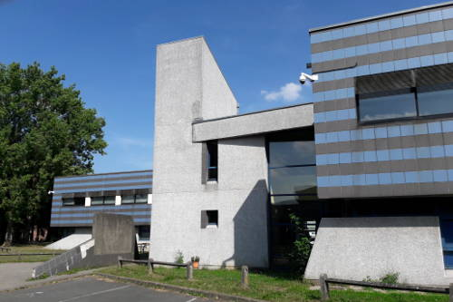

Plan
-
Venir étudier à Lille
-
Les études
-
l'Alternance
-
Les options
-
Bon à savoir
## La métropole
- Plein d'activités (classiques et moins classiques)
- Divertissements orientés vers le jeu
- Proche de la frontière
- Pas vraiment dépaysé
## L'Université de Lille
- La plus grande de France (en nombre d'élèves)
- Reconnaissance d'étude pour l'IPL
- *PAS DE PASSERELLE*
- Inscription : 250€
- Grande infrastructure
Étudier l'informatique à Lille
- Bâtiment attitré (M5) + salle attitrée en M2
- Association étudiante : AEI
- Professeurs compétents et à l'écoute

## Master 1
- **Semestre 1**
- Algorithmique et complexité
- Programmation système d'exploitation
- Programmation embarquée
- Génie logiciel
- ***Projet au choix***
- **Semestre 2**
- Catalogue de cours à choisir
- Projet individuel
## Master 2
- **Semestre 1**
- Cours
- Projet (technique ou de recherche)
- **Semestre 2**
- Stage de 3 à 6 mois
## Avantages
- Années d'expérience
- Garder un pied dans le concret
- Inscription gratuite
- Salaire ( > 1000€/mois)
## Inconvénients
- Travail supplémentaire
- Cours en moins
- Présence obligatoire (feuille à signer à chaque fin de cours)
- ```Vacances--```
## Modalités
- Étudiant = salarié
- Rapports réguliers à rendre
- Soutenances en fin d'année
- Contrat pour les deux ans ou seulement pour le M2
## Choisir une alternance
- Travail dans le domaine de l'option choisie
- M1 : lien avec les études pas obligatoire
- M2 : obligatoire
## E-Services
- Web, mobile, IHM, ergonomie
- Orienté entreprise
- Exemple de projet : développement d'une application
- Exemple de stage/alternance : développeur front/back/mobile
## IAGL
- Infrastructure Applicatives et Génie Logiciel
- Gestion de projet, conception/architecture, développement
- Orienté entreprise
- Exemple de stage/alternance : développeur web, conception
## TIIR
- Infrastructure, cybersécurité, DevOps, IoT, bas-niveau
- Travaux pratiques concrets
- Compétences transverses
- Exemple de projet : infrastructures cloud
- Exemple de stage/alternance : admin sys
## MOCAD
- Intelligence artificielle, algorithmique, bio-informatique
- Orienté recherche
- Exemple de projet : simulation centrée individus
- Exemple de stage/alternance : data scientist, chercheur
## IVI
- Vision artificielle, traitement d'image, AR/VR, modélisation 3D
- Orienté recherche
- Exemple de projet : intégration du toucher à la VR
- Exemple de stage/alternance : vision pour robots
## Data science
- Machine learning
- À partir de 2020
- 24 personnes admises SEULEMENT
## MIAGE
- Management
- Interaction avec les autres intervenants d'une entreprise
- Master qui n'est pas technique
- Très demandé
## Pour s'inscrire
- Inscriptions : début avril à fin mai
- CANDIDATURES
- Pensez-y maintenant
## Alternance
- Difficulté relative à l'option que vous choisissez
- Ils ne connaissent pas l'IPL
- Prouvez vos compétences
- Portfolio, projets sur Github, etc
## Se déplacer
- Métropole est grande
- L'université est excentrée MAIS accessible facilement par métro
- Plusieurs choix
- Loger sur place + transports en commun
- *Y aller depuis Bruxelles*
## Où loger
- Résidence universitaire (CROUS)
- Pas cher mais pas ouf
- Près du Vieux Lille
- Super bien situé, cher
- Hellemmes
- Bon compromis entre les deux
- À mi-chemin entre le centre et l'université
## Argent
- CAF (caisse d'allocation logement)
- Si alternant
- action logement
- Abonnement transports remboursé à 50% par l'entreprise
- Bourse "Informatique au féminin"